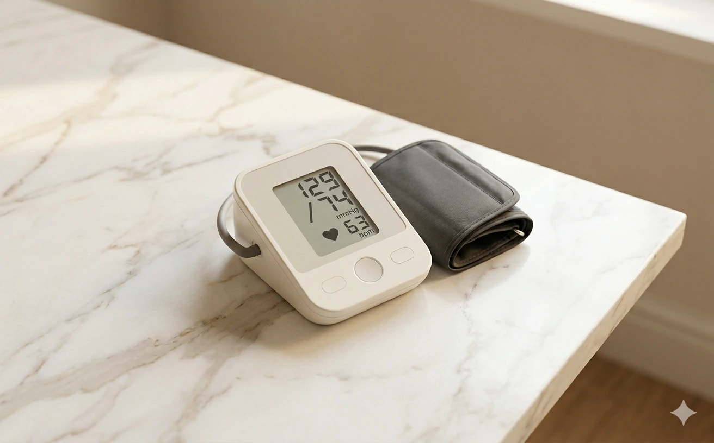

Cardiólogo en Elche · Clínica Elche Salud
Medición correcta · Valores normales · Tratamiento

La hipertensión arterial (HTA) es la elevación mantenida de la presión que ejerce la sangre sobre las paredes de las arterias. Cuando el corazón bombea sangre al cuerpo, esta circula por las arterias con una presión determinada. Si esa presión es demasiado alta de forma sostenida, las arterias sufren, se dañan, y aparecen complicaciones cardiovasculares.
La hipertensión es uno de los principales factores de riesgo cardiovascular. Aumenta el riesgo de infarto de miocardio, ictus, insuficiencia cardíaca, enfermedad renal crónica, problemas en la retina y deterioro cognitivo. Es una enfermedad muy prevalente que afecta a millones de personas, muchas de las cuales no lo saben.
La hipertensión arterial no duele. No produce síntomas en la inmensa mayoría de los casos. Por eso se la llama "asesino silencioso". Puedes tener la tensión arterial muy elevada durante años y sentirte perfectamente bien, mientras el daño cardiovascular avanza sin que lo notes.
No hay síntomas específicos de hipertensión. El dolor de cabeza, el mareo o el sangrado nasal no son signos fiables de tensión alta. La única forma de saber si tienes hipertensión es midiéndola. Por eso es fundamental controlar la tensión arterial de forma regular, especialmente si tienes factores de riesgo.
En la mayoría de los casos no tiene una causa identificable: se llama hipertensión primaria o esencial, y es multifactorial. Los principales factores que la favorecen son el exceso de peso, el consumo elevado de sal, el sedentarismo, el alcohol, el tabaquismo, el estrés crónico y los antecedentes familiares. La mayoría son modificables.
En un pequeño porcentaje de casos, la hipertensión es secundaria a una enfermedad concreta: problemas renales, trastornos endocrinos, apnea del sueño o ciertos fármacos. Identificar y tratar la causa puede resolver o mejorar la hipertensión.
La presión arterial se expresa con dos números: la sistólica (máxima, cuando el corazón se contrae) y la diastólica (mínima, cuando se relaja). Se mide en milímetros de mercurio (mmHg).
Estos valores son orientativos. El objetivo puede variar según la edad y las enfermedades asociadas. Una sola toma en consulta no es suficiente para diagnosticar hipertensión: se necesitan medidas repetidas y preferiblemente registros domiciliarios.
Medir en casa es más fiable que una medición puntual en consulta, siempre que se haga bien. Evita el efecto "bata blanca" y ofrece múltiples valores en condiciones habituales.
Usa tensiómetro de brazo (no de muñeca), validado, con manguito de la talla correcta. Un manguito inadecuado invalida la medida.
Evita estimulantes, ejercicio intenso y tabaco en los 30 minutos previos. Vacía la vejiga. Siéntate tranquilamente 5 minutos antes de medir.
Espalda apoyada, brazo sobre la mesa a la altura del corazón, piernas descruzadas, pies en el suelo. En silencio durante la toma.
Sobre piel desnuda, nunca sobre ropa. El borde inferior a 2–3 cm del pliegue del codo. Ajustado pero sin apretar (debe caber un dedo).
Toma la tensión 3 veces con 1 minuto de descanso entre cada toma. Descarta la primera; quédate con la media de la segunda y la tercera.
Mídela al menos 3 días distintos: antes del desayuno y antes de la cena. Anota todos los valores y llévalos a tu médico.
AMPA (Automedida de la Presión Arterial): Las medidas que tú mismo te tomas en casa siguiendo la técnica correcta. Más válidas que la medida en consulta porque reflejan la tensión en condiciones habituales y sin efecto de bata blanca.
MAPA (Monitorización Ambulatoria de la Presión Arterial): Dispositivo que llevas 24 horas y toma la tensión automáticamente cada 15–30 minutos durante el día y cada 30–60 minutos por la noche. Es la medida más completa: detecta hipertensión de bata blanca e hipertensión enmascarada, y registra el comportamiento nocturno.
El tratamiento tiene dos pilares: medidas no farmacológicas (cambios en el estilo de vida) y tratamiento farmacológico. Ambos son importantes y en muchos casos es necesario combinarlos. En fases iniciales o hipertensión leve, los hábitos pueden ser suficientes para evitar los fármacos o reducir las dosis necesarias.
Sodio: reduce la sal. Menos de 2 g de sodio al día (menos de 5 g de sal). La mayor parte no viene del salero sino de alimentos procesados, embutidos, conservas y precocinados.
Potasio: aumenta el consumo. Frutas (plátano, kiwi, naranja), verduras de hoja verde, legumbres, frutos secos, patata, aguacate.
Ejercicio aeróbico y de fuerza. Al menos 150 minutos de aeróbico moderado a la semana más 2 sesiones de fuerza. Es uno de los mejores tratamientos disponibles.
Alcohol: cero o mínimo. El alcohol eleva la tensión. Lo ideal es eliminarlo.
Peso saludable. IMC menor de 25 kg/m² y perímetro de cintura adecuado (< 94 cm en hombres, < 80 cm en mujeres).
La dieta DASH (Dietary Approaches to Stop Hypertension) es el patrón con mayor evidencia en reducción de presión arterial. Basada en frutas, verduras, cereales integrales, legumbres, pescado y lácteos bajos en grasa, y reducción de sal, carnes rojas y procesados. Puede reducir la presión sistólica hasta 10–12 mmHg, comparable al efecto de algunos fármacos.
Cuando los hábitos no son suficientes, es necesario tratamiento farmacológico. No significa fracaso: significa que tu hipertensión necesita tratamiento médico para proteger tu corazón, arterias, riñones y cerebro. Existen múltiples fármacos; el médico elegirá el más adecuado según tus características.
Tomar medicación no significa que todo esté controlado. Hay que seguir midiendo la tensión regularmente y ajustar el tratamiento según la evolución. No des por hecho que, por tomar pastillas, tu tensión está bien. Compruébalo.
Consulta si tus medidas en casa son persistentemente ≥ 140/90 mmHg, si tienes factores de riesgo cardiovascular asociados, si ya estás en tratamiento pero las medidas siguen siendo altas, o si tus valores están en el rango de presión elevada (120–139 / 70–89 mmHg). En ese rango aún no hay hipertensión establecida, pero es el momento de actuar.
La consulta cardiológica permite valorar el riesgo cardiovascular global, realizar un estudio completo (ECG, ecocardiograma, analítica) y diseñar un plan personalizado de prevención y tratamiento.
Resumen visual con todos los detalles sobre la técnica correcta:
Valores de referencia y cuándo preocuparse:
Consulta cardiológica en Elche. Valoración completa, plan personalizado de prevención y tratamiento.
Abordaje global con nutrición, ejercicio y prevención personalizada.
Ver detalles → Motivo de consultaQué son, cuándo preocuparse y cómo se estudian.
Ver más → Motivo de consultaCómo interpretar tu analítica, objetivos según tu riesgo y prevención.
Ver más →